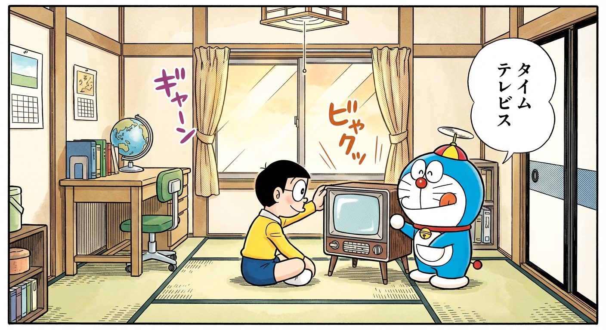
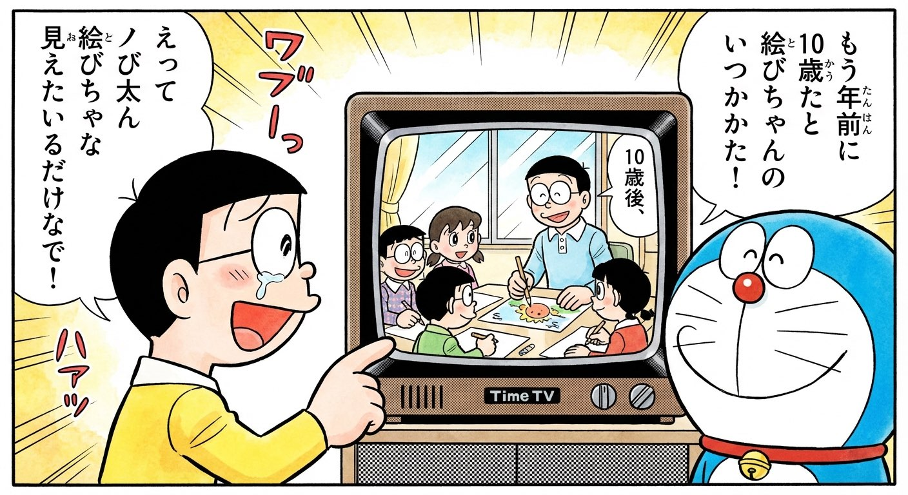
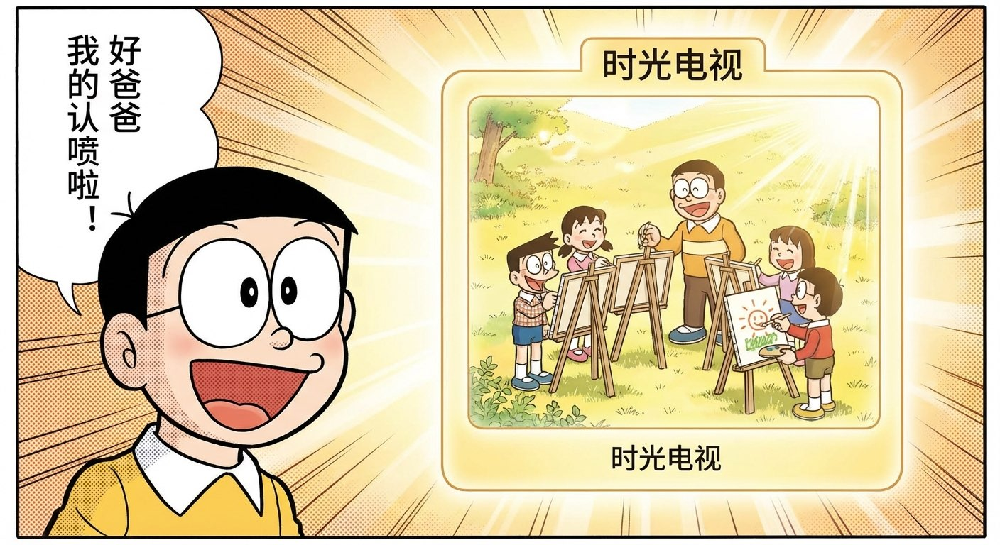
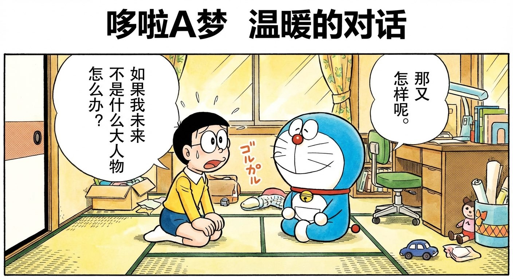
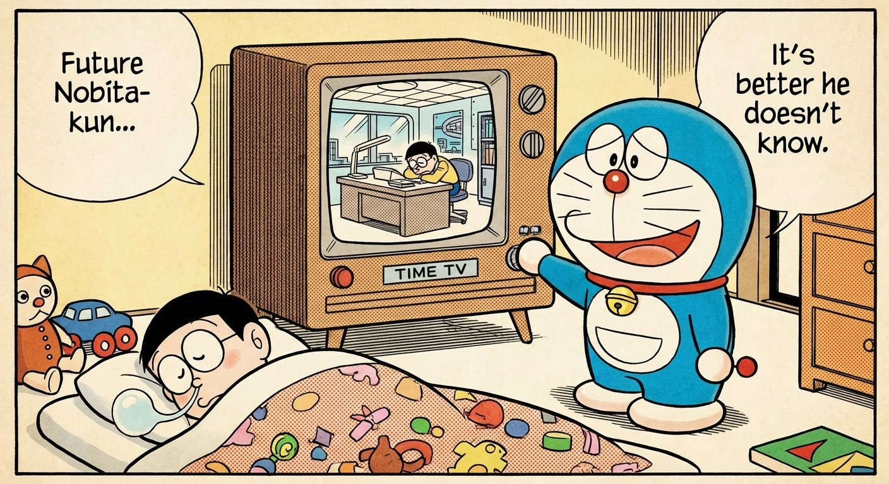
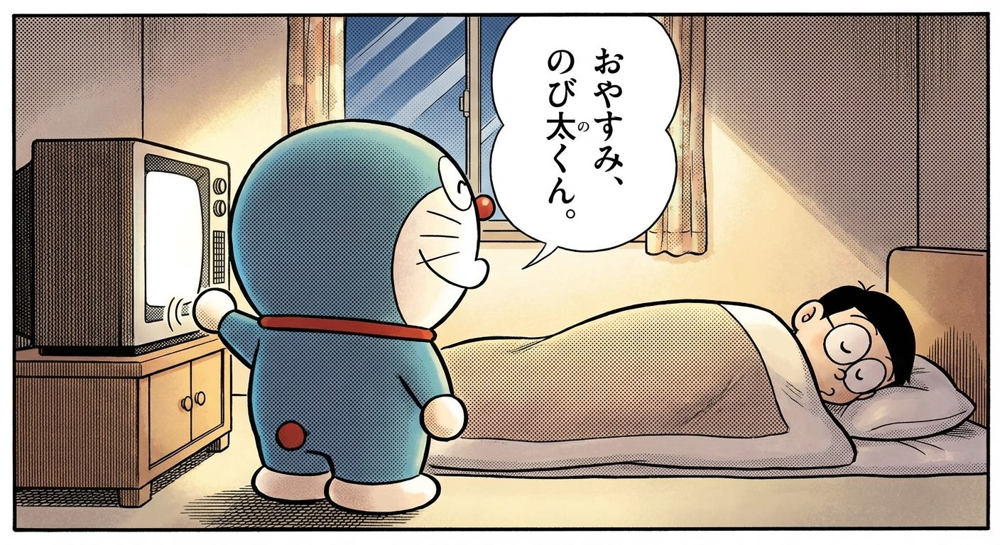

1
大雄放学回家，又考了零分。他趴在桌上嘟囔："我以后会不会一辈子都这样啊……"
哆啦A梦从口袋里掏出一台小电视："要不要看看10年后的你？"

2
屏幕亮起来。10年后的大雄——在一间明亮的教室里，正在教一群小朋友画画。
他画得不算好，但小朋友们围在旁边，笑得很开心。

3
大雄看呆了："我以后……是老师？"
"不是什么名校老师啦，"哆啦A梦说，"就是社区的儿童画画班。"
屏幕里的大雄蹲下来，帮一个小女孩修改画。那个表情，大雄从没在镜子里见过——是真的很满足。

4
大雄小声说："可是……我不是什么大人物啊。"
哆啦A梦关掉时光电视，笑了笑："大人物？你见过哪个大人物笑成那个样子？"
大雄想了想，好像确实没有。

5
夜里，大雄睡着了。
哆啦A梦悄悄走到时光电视前面，回头看了一眼大雄——确认他真的睡熟了。
然后切到了另一个频道。
屏幕上，另一个10年后的大雄，在深夜的办公室里加班。眼睛下面有黑眼圈，桌上堆满了文件。

哆啦A梦轻轻关掉了那个频道。
背对着大雄，月光从窗户照进来。
他的表情，是温柔的微笑。
—— 有些未来，知道一个就够了。